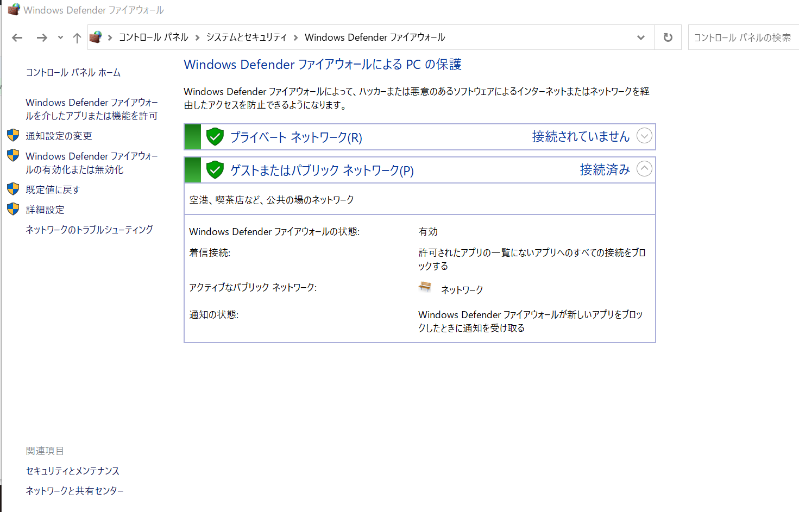
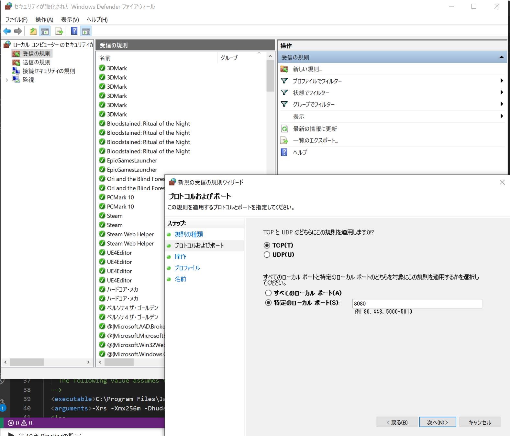
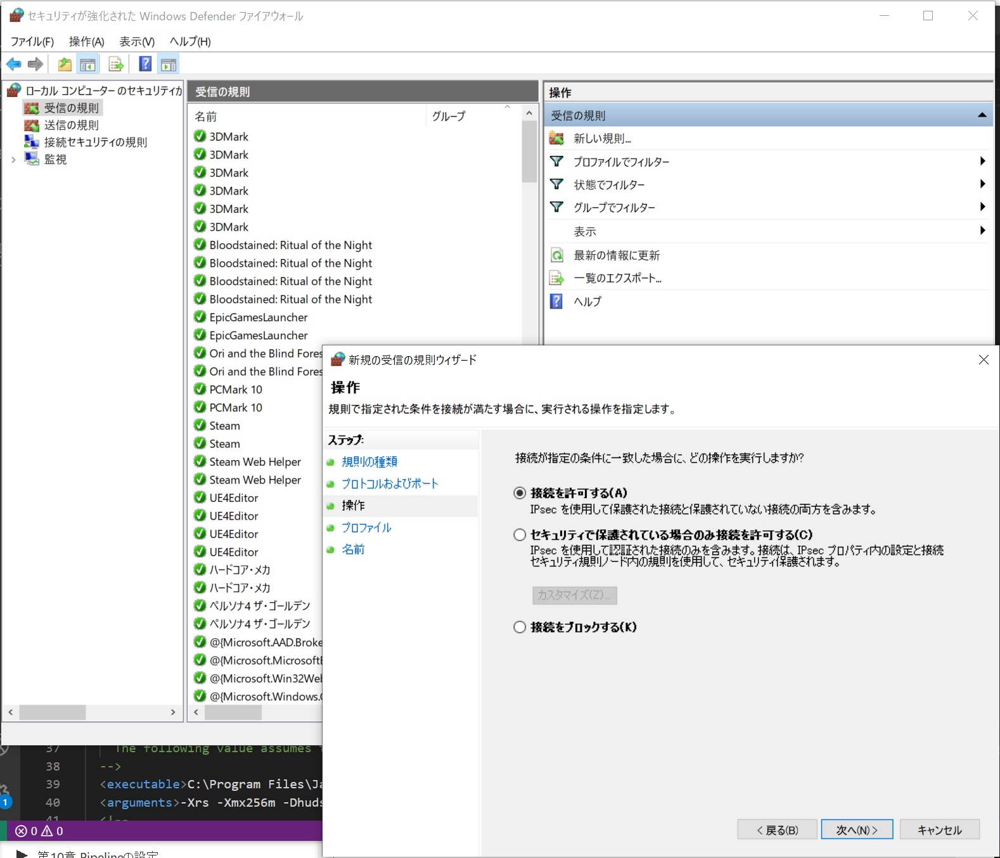
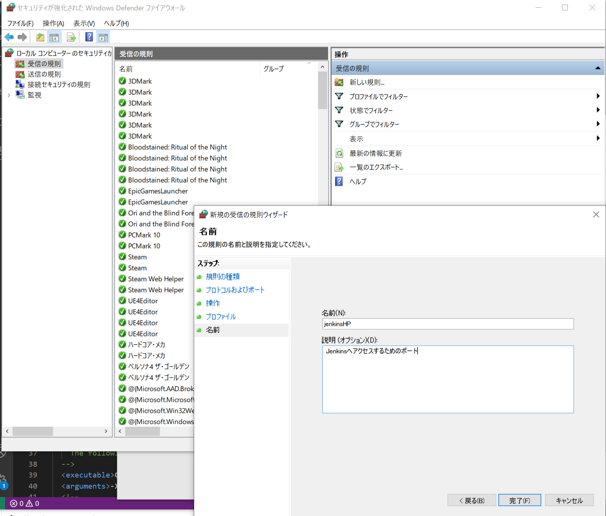

他PCからローカルLAN内のJenkinsにアクセスできないとき
参考：
https://support.borndigital.co.jp/hc/ja/articles/360002711593-Windows10%E3%81%A7%E7%89%B9%E5%AE%9A%E3%81%AE%E3%83%9D%E3%83%BC%E3%83%88%E3%82%92%E9%96%8B%E6%94%BE%E3%81%99%E3%82%8B
ファイアウォールの設定を開く
「Windows Defender ファイアウォール」→「詳細設定」で「セキュリティが強化されたWindows Defender ファイアウォール」を起動する。

ポートを開放する
「受信の規則」から「新しい規則」でjenkinsにアクセスするためのポートを開放します。
  
https://<ローカルマシン名>:8080にアクセス
Jenkinsのページにアクセスできます。
jenkins says my reverse proxy setup is broken
参考：
https://qiita.com/4_mio_11/items/de90df3682323c30319a
https://sites.google.com/site/muchonote/jenkins/jenkinsnoinsutoruto-chu-qi-she-ding
Jenkinsを起動しているPCから自身のJenkinsにアクセスするさいにlocalhostでアクセスしないようにすることで解決？